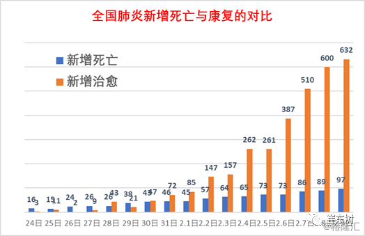
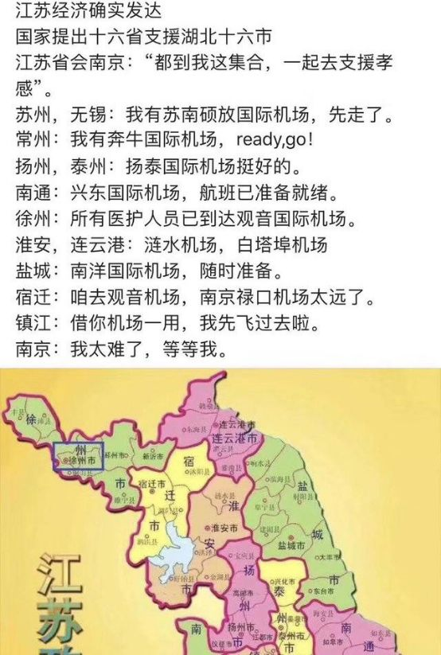

叶青疫区日记：三声惊雷
原文链接 备份链接 点击上方蓝字 _ 关注我们 _ 非常时期，武汉成了全国人民挂念、祈福的城市。封城后，武汉人民的真实生活是什么样？ 正和岛自1月26日起特别推出《叶青：我在武汉疫区的第N天》专栏。叶青是一位定居武汉40年的市民，也是一名 …

非常时期，武汉成了全国人民挂念、祈福的城市。封城后，武汉人民的真实生活是什么样？
正和岛自1月26日起特别推出《叶青：我在武汉疫区的第N天》专栏。叶青是一位定居武汉40年的市民，也是一名学者和官员。接下来的一段时间，他会用笔记录下亲身经历的、观察到的武汉，为此他还专门外出到大街上、到超市里，获得一手真实的信息。
这将是一份宝贵的史料。感谢他，我们得以更真切地感知到武汉疫情。让我们一起为武汉加油！
作者：叶青 中南财经政法大学教授、博导
湖北省统计局副局长 正和岛蓝色岛邻
来源：正和岛案例（ID：zhenghedaoanli）

让湖北3156成为高峰
9日，正月十六。晴天。
9日，全国新增确诊病例3062例（湖北2618例），新增重症病例296例（湖北258例），新增死亡病例97例（湖北91例）。
当日新增治愈出院病例632例（湖北356例），解除医学观察的密切接触者29307人。
截至9日，全国确诊病例35982例（其中重症病例6484例），累计治愈出院病例3281例，累计死亡病例908例。

9日，湖北省新增新型冠状病毒肺炎病例2618例，其中：武汉市1921例、黄冈市115例、孝感市105例。
全省新增死亡91例，其中：武汉市73例、孝感市4例、鄂州市3例。
新增出院356例，其中：武汉市167例、黄冈市52例、孝感市36例。
截至9日，湖北省累计报告新型冠状病毒肺炎病例29631例，其中：武汉市16902例、孝感市2541例、黄冈市2252例、随州市1049例、荆州市1045例、襄阳市1019例。
全省累计死亡871例，病死率2.94%，其中：天门市10例、病死率4.61%，武汉市681例、病死率4.03%。


一天来了6200人
8日，元宵节当天晚上，国内十多个省市的医院都接到了通知。当天晚上及第二天，6200 多名医务工作者火速集结，加入武汉战疫总攻！
9日，来自辽宁、上海、天津、河北、山西、江苏、浙江、广东、四川、山东、河南、福建等省的医疗队人员6200人，来自俄罗斯等世界各地的328.1吨防疫物资，自凌晨01:50最早一架包机落地，一直到深夜23:50， 41架包机，昼夜不息、驰援湖北。
江苏：958 人！规模为前四批总和的两倍。至此，江苏已派出 1438 名医务工作者奔赴湖北参与疫情防控工作。
上海：再派 350 名！2 支医疗队驰援武汉。
浙江：838 人！第三批紧急医疗队出征湖北。驰援湖北的医务工作者超过千人。
广东：再次增援 438 人！广东援湖北医疗队员1176人。
山东：一天派出两批援助湖北医疗队，共 567 人。总共是1266人。
辽宁：1000 名医护人员支援武汉雷神山医院。辽宁省两支医疗队分别于8日晚和9日上午出征湖北，共 1000 名，重点是支援雷神山医院。两支医疗队各 500 人建制，每队包括临床医师 120 名、护理人员 380 名。
感谢，搬来了两座医院！
9日晚，国家抽组的中国医科大学附属第一医院 60 人医疗队，又从沈阳出发启程奔赴武汉。
至此，辽宁省驰援湖北医疗队、疾控队人数达 1382 人。
河南：共 300 人！河南援助湖北第五批医疗队出征，河南共派出 5 批次 687 名队员组成的医疗队赶赴湖北。
河北：深夜驰援武汉，两批次 305 人。河北省已派出支援湖北医护人员和工作人员 608 名。
四川：303 人！第六批援助湖北医疗队出征。四川省已派出六批次共 917 名医务人员援助湖北。
山西：几个小时内，120 多家医院 300 名医护人员集结。山西省派出四批支援湖北医疗队，总人数已逾 600 人。
贵州：42 人！国家紧急救援队（贵州）驰援武汉。
安徽：第三批支援武汉医疗队，300 人组成超强“战队”。安徽已先后派出三批，共计 585 名医务人员支援武汉。
福建：264 人！厦门首次独立组建最大规模的医疗队。他们整建制接管华中科技大学同济医学院附属同济医院光谷院区的 2 个重症病区开展工作。
天津：第五批 303 人！星夜驰援武汉。天津市派出五支医疗和疾控工作队，共计 628 名医务人员驰援湖北。
……
9日，是天河机场迄今为止迎接医疗队人数最多的一天。
“武汉加油、中国加油”的声音响彻在每支驰援的医疗队的航班上。
据统计，自1月24日至2月9日，武汉机场共保障航班579架次，运输2.7万人，货物3007.6吨。其中，共运送医护人员124架次，1.7万人；运送防疫物资115架次，运送防疫物资29.3万件，2205.4吨。
看来发起总攻的时候到了。
一省包一市的命令下达之后，就有了江苏十三太保硬核支援孝感的感人故事。

惹得孝感人民感谢不叠。
我们有菜吃，也离不开兄弟们的支持。
国务院联防联控机制新闻发布会9日的主题是“疫情防控中重要生活物资的生产保供情况”。商务部介绍了“九省联保联供机制”保障武汉生活必需品供应的具体情况。
截止到目前，山东、安徽、江西、河南、湖南、重庆、广西、云南等八个省区市的商务部门已协助武汉市落实蔬菜、方便面、消杀物资等货源7000多吨。其中蔬菜6824吨，速冻和方便食品205吨；协调解决运输通道受阻、货源不足、企业复工难等具体问题20余起。
连女篮姑娘也不放过“武汉加油”的机会。你看她们鞋上的字是什么？

宠物也要关心
我们再来看看武汉的情况。
9日开始，武汉市全城开展一天两次的集中消毒，时间分别是每日上午10时和下午4时左右。
湖北各地的城市、社区、农村继续开展消毒消杀工作，减少病毒滋生蔓延，以降低新冠肺炎的传播风险。
在荆州，晚上9点至次日凌晨2点，52辆作业车同时出发，对全市300个小区，3000万平米所有公共区域和公共设施进行集中消毒。在各个小区里、背街小巷中，工作人员背着喷雾器等设备，进行人工喷洒消毒。
自从国家卫健委提出“四集中”（集中患者、集中专家、集中资源、集中救治）的要求以来，街道和社区的工作量急剧增加；与此同时，为了保证在规定时间内完成任务，上级的检查和督查又不断增加。
于是，出现了“一个人干活，两个人督导，还有一个人督查”的现象，基层干部实在心累。
9日，武汉全市开展了一个大行动：整合市直机关企事业单位党员干部、职工及高校教师，共16739人，下沉到疫情较重的社区，统一编入街道社区工作队，全天候全覆盖排查“四类人员”，确保应收尽收、不漏一人。
在一个1000多万人口的大城市，做这项工作相当不易。
截至9日下午，拥有6000余户19000余人的位于马场角横路上的富豪社区中，有21人确诊新冠肺炎。
好消息是，这两天社区干部已经没有接到一通新增的发热居民的电话了，这无疑对社区工作人员来说是莫大的安慰。
一场旷日持久的战役，总算看见了转机。
武汉的社区干部辛苦，武汉之外的干部也没有闲着。
恩施州在1月24日就下发通知，要求全州各级各部门驻村工作队和尖刀班的全体同志在1月25日（大年初一）12:00之前驻村，协助村两委做好疫情防控工作。
十堰市郧阳区，从腊月二十八开始，全区分为100多个网格，无死角排查管控。从大年初二开始，所有四大班子领导都下沉乡镇，带上自己的生活必需品，不允许回城区。从正月初三开始，全区132个扶贫工作队就地转化为防疫工作队，创建文明城市的工作机制就地转化为防疫工作机制。同时，动员所有机关干部、党员进社区，县级领导担任重点楼栋（有疑似或确诊病例）的楼栋长。
这里有一个小插曲。
武汉商学院、江汉大学、武汉船舶职业技术学院、武汉软件工程职业学院已发布公告，部分学生宿舍被临时征用，用于武汉市疫情防控工作。
可能学生的物品就没有保管好，学生看到视频后就有意见。
10日凌晨，武汉软件工程职业学院团委发布道歉信称，7日接到武汉市防指办通知，紧急征用部分宿舍作为新冠肺炎医护隔离点，因此直到9日晚都在为此事忙碌，并对同学物品处置不当的情况深表歉意，同时承诺，所有同学物品若有损失，开学后学校将在核实的基础上予以赔偿(补偿)。疫情过后，学校定会请专业机构对征用宿舍严格消毒。
关键时候，一个道歉也是很温暖的。

十天来，对红十字会的检查有了新的消息。
中国红十字会党组书记、常务副会长梁惠玲率领总会工作组于２月１日晚奔赴武汉，工作组实地走访了武汉市防疫应急物资储备仓库、国药控股湖北物流中心仓库，深入了解物资接受、调配、分发、公示有关情况；到湖北省疾控中心、火神山医院等地，实地督导捐赠物资发放工作；赴湖北省和武汉市红十字会，指导规范捐赠款物接受使用和信息公开工作……
我注意到几个细节：已在长江云客户端开设《请您监督》专栏，持续公布捐赠款物及具体使用情况信息，充分发挥总会监事会作用，全程介入捐赠款物接受使用管理监督。从江苏、四川省红十字会抽调精干力量支援湖北省、武汉市红十字会工作。
为切实做好武汉市新冠肺炎疫情防控海外捐赠医疗物资及采购防疫物资的集并等工作，有效组织海外物资及时到达武汉，经市防控指挥部同意，由爱派克斯国际物流（中国）有限公司负责美国、欧洲及韩国的防疫物资集并、清理、仓储等工作，待物资达到一定数量后，集中运抵武汉。
这有点像跨境电商中的“海外仓”。
人走了，宠物留在家里，只有5、6天的粮食怎么办？武汉市小动物保护协会开始行动。
1月25日，“封城”的第三天。武小协会长杜帆给志愿者西瓜打了个电话，留守在武汉城中的宠物面临着断水断粮的危险，很多宠物主人找到他们寻求帮助。
26日下午，武小协的公众号更新了一篇文章——《猫狗留在武汉的主人们，可以联系我们》。原本志愿者预估留守动物的家庭在50个左右，但意外的是，十分钟就有两百多份求助信发来，三个分区群不到一个小时就爆满。
志愿者们救助的95%是小猫，也有狗、仓鼠、鹦鹉、兔子等宠物。
志愿者小宁记得，她去救助的一只小泰迪在家里的厕所呆了小半个月，放出来以后在房间里撒欢跑了好久都没停。
协会还救过一只叫“屁屁”的宠物猪，主人走前只留了一周的食物，志愿者们赶到的时候，100多斤的小猪已经在家独自守了12天，冲着他们直尖叫，面前的盆子已经被咬破，阳台上乱做一团。
有的主人还要花钱请锁匠。毕竟宠物也是一条命。
为了让发热病人主动“冒出来”，各地想的办法不少。
8日，十堰房县发布《发热病人就诊奖励办法公告》，其中4条都是奖励办法，第一条奖励1000元，奖励对象为主动到县乡定点医院发热门诊就诊的发热人员。
立刻成为网络关注的热点。

一系列新锐产品会冒出来
在网上有一张照片。据说来自上海。

为了避免手的感染，坐电梯只能用脚了。
由手控变成了脚控。有的小区在电梯里准备了手纸，也是一个办法。其实，戴个手套也可以解决问题。

但是，现在看到的是，有的人报复社会的行为很恶劣。
8日21：50，在武汉一小区内，一女子形迹可疑，似乎在向门把手吐口水，有居民发现后向警方报了案。该小区目前新冠肺炎疫情严重，已确诊30多例，累计发热90多例，截止目前仍有部分病患在家隔离。警方在接警后穿防护服前来处理。
这不是在添乱吗？
我记得在老式火车上，有脚踩的水龙头。这样的话，手就不需要接触水龙头。但是，现在高铁上、高铁站、飞机上、机场的水龙头，地铁饮水机等，都是靠手动的，看来以后都应该改为脚踩的。
我觉得应该有声控电梯出现。业主进电梯，只要说“5楼”，电梯就会识别业主的声音，并在几楼停下。而外人是进不去的。
网上一查，还真的有。
2019年9月，媒体报道，日本东芝公司研制出能听懂人说话的人工智能电梯，乘坐电梯的乘客不需要按电梯按钮，只需要对着电梯的一个听筒装置说出想要去的楼层，电梯即可到达你想要去的楼层。
我们小区的电梯是“云电梯”，用各种广告与防治“新冠肺炎”的告示。有一次，电梯等人的时间长了一点，电脑就说：不要阻挡电梯门。看能不能与声控结合起来。
指纹门锁，应该改成“声纹门锁”。
声纹识别，生物识别技术的一种，也称为说话人识别，包括说话人辨认和说话人确认。声纹识别就是把声信号转换成电信号，再用计算机进行识别。不同的任务和应用会使用不同的声纹识别技术，如缩小刑侦范围时可能需要辨认技术，而银行交易时则需要确认技术。
一次“新冠肺炎”，会让很多产品得到升级的机会。
能够脚控的，不用手控；能用声控的，就不用脚控。不知道企业家听懂了没有。

共享员工
大难当头，与餐饮业的门庭冷落相对应的，是零售业因供不应求和人员并未全部到位所产生的用工短缺现象。
阿里旗下的盒马鲜生就秀了一波神操作：“共享员工”！
包括西贝、奈雪在内的30多家餐饮企业都在与盒马沟通租用员工的方案，其中仅西贝一家就有逾千名员工赴盒马上班。
疫情面前，猎聘HRO·勋厚人力宣布推出“员工共享”计划，已有50多家来自各行业的头部企业，如万科物业、南都物业、京东、路劲地产、百胜集团等加入。
猎聘HRO·勋厚人力也已经为近千名“溢出”员工找到了“临时的可靠归宿”。
地铁停了，地铁员工并没有闲着。
9日起，武汉地铁集团连夜组织800人，火速支援硚口、洪山两个中心城区疫情防控一线。
800人分成两个突击队，硚口区和洪山区各一队。洪山区突击队队分成35组，每个组负责一个社区，协助梨园街道、和平街道等35个社区；硚口区突击队分成9个小组，到所辖区隔离酒店、社区，协助开展疫情防控工作。
这是一种“武汉时间”的“共享员工”。

小结
湖北之外的医护人员在武汉已达17000人左右。
定点医院、方舱医院、隔离酒店、社区门诊，层层担责。
距离1月23日越来越远，我们就越来越安全。
希望4日的高峰永远是高峰。希望现在就是钟南山说的“过几天”。
抗击“新冠肺炎”的总攻不远了。
原文链接 备份链接 点击上方蓝字 _ 关注我们 _ 非常时期，武汉成了全国人民挂念、祈福的城市。封城后，武汉人民的真实生活是什么样？ 正和岛自1月26日起特别推出《叶青：我在武汉疫区的第N天》专栏。叶青是一位定居武汉40年的市民，也是一名 …
原文链接 备份链接 从1月23日“封城”到元宵节，已经过去整整17天。即使我每天忙于记日记，也觉得时间过得很快啊。 过去我要早起，6点起床，7点到办公室，不堵车。现在则是天天睡到自然醒，有点提前退休的感觉。虽然我还有两年上班的时间。 …
原文链接 备份链接 非常时期，武汉成了全国人民挂念、祈福的城市。封城后，武汉人民的真实生活是什么样？ 正和岛自1月26日起特别推出《叶青：我在武汉疫区的第N天》专栏。叶青是一位定居武汉40年的市民，也是一名学者和官员。接下来的一段时间，他 …
原文链接 备份链接 非常时期，武汉成了全国人民挂念、祈福的城市。封城后，武汉人民的真实生活是什么样？ 正和岛自1月26日起特别推出《叶青：我在武汉疫区的第N天》专栏。叶青是一位定居武汉40年的市民，也是一名学者和官员。接下来的一段时间，他 …
原文链接 备份链接 医疗防护资源不足是常态，各地资源调配需平衡，“灯下黑”区域渐次光亮，但少数地区的疫情宣传依旧不到位 外地务工返乡者最担忧的问题是年后经济收入断流、地域歧视，担心节后可能无法返工 本文首发于南方人物周刊 文 | 本刊记 …